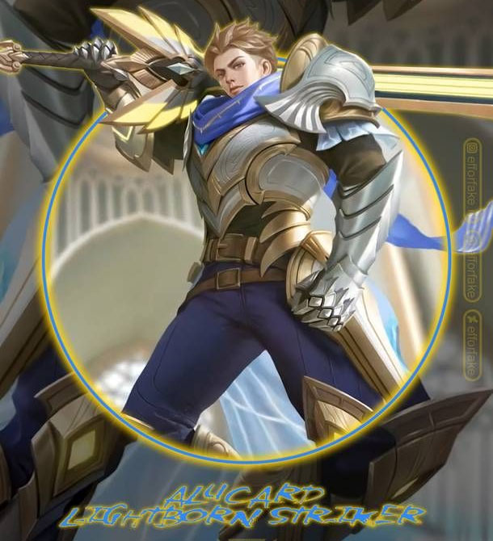

Welcome to Khairan's site
Khairan's Mobile Legends Review
Introduction
Mobile Legends is a fighting game in which 5 players compete in a team against another 5. You can choose characters that have magic or physical ability. There are 6 roles – marksman, tank, support, fighter, mage and assassin. Tank, support, fighter and assassin are melee, though some support can be magic (shoot from afar). Marksmen can also shoot from far, like mages, but mages fight using magic. Optimally, each player should choose a different role on the team, even though there is no such rule to do so. The person with retribution (a spell where you can decrease the monsters’ health) must destroy the monsters around the map to buff (increase their character’s strength). You can also buy items, such as magical and physical items. Roaming items can also be bought for tank and support, which allows you not to share your gold and experience with your teammates. After ten minutes, there will be a lord whom, if you attack it, will follow one direction and destroy the enemies turret. The minions (there are 3 minions in each team which come out every 30 seconds which are used to destroy the enemies’ turret) will become very strong.
Graphics
While you are playing the game, at the top left corner, there is a map that shows where your teammates are and where the monsters are. It also shows enemies when your teammates see them. At the bottom right corner, there are controls for power. The bottom left corner contains controls for moving around. There is a 3rd person camera for the player to view the character and surroundings. There is grass everywhere. At the middle of the map, there is a river. There are frogs jumping and fishes swimming. At the sides of the map, there will be a gigantic turtle that gives gold to the whole team. The person who kills the turtle will become very strong.
Summary
I like the wide variety of options for choosing a character to play. Sometimes, the interaction with teammates is not good. At times, they may ask you to do things that you may not be willing to do (such as when to attack) and if you choose not to do so, they may trash-talk you. Overall, you may enjoy this game and can give it a try by downloading it on Android Play Store or iPhone App store.